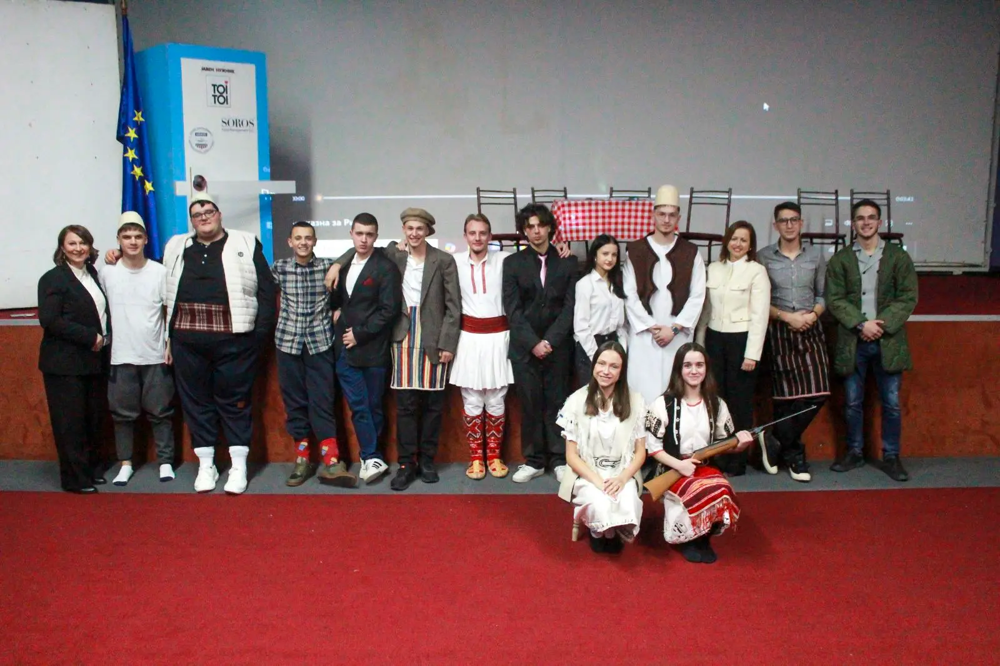

Култура
Хуманитарна театарска претстава „Втората смрт на Кузман Капидан“
Промотивната недела на СОУ „Ристе Ристески – Ричко“ ја заокруживме со хуманитарната театарска претстава „Втората смрт на Кузман Капидан“, реализирана од учениците, во организација на Училишната ученичка заедница и драмската секција.